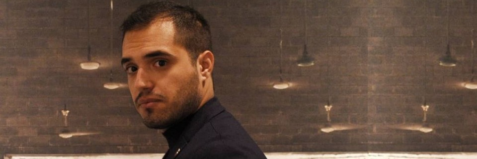

About Me

Hello! I'm Anastasios Tatarakis, a passionate Full Stack Developer
and IT Specialist currently based in Copenhagen. With a solid
foundation in JavaScript and Python, I'm on an exciting journey of
continuous learning, currently delving into .NET and C# to broaden
my skill set.
My journey in technology has been shaped by diverse experiences,
ranging from developing healthcare IT solutions to crafting
e-commerce platforms. These experiences have honed my ability to
approach challenges creatively, always striving to deliver efficient
and user-friendly solutions.
Here's what I bring to the table:
-
A strong foundation in full-stack development, focusing on
JavaScript and Python.
-
Practical experience in IT support, ensuring smooth operations and
prioritizing user satisfaction.
-
An eagerness to learn and adapt, currently expanding my expertise
in .NET and C#.
-
A problem-solving mindset with a genuine passion for creating
applications that users love.
-
Excellent communication skills developed through diverse
experiences in tech and hospitality.
I'm excited about the opportunity to bring my enthusiasm, growing
skills, and fresh perspective to your team. I'm committed to
learning, growing, and contributing my utmost to create something
extraordinary together!
Technical Skills

Development Skills
-
Languages: Proficient in JavaScript and Python;
solid understanding of HTML5, CSS3, and SQL.
-
Frameworks/Libraries: Experience with React,
Node.js, Express.js; familiar with Django and Flask.
-
Databases: Working knowledge of MongoDB, MySQL,
and PostgreSQL.
-
Tools & Technologies: Comfortable with Git for
version control; exploring Docker, AWS, and Heroku.
-
Currently Learning: Expanding skills in .NET and
C#.
IT Support Capabilities
- Network configuration and troubleshooting basics.
-
Foundational knowledge of system administration (Windows, Linux).
- Understanding of data backup and recovery principles.
- Awareness of cybersecurity best practices.
Personal Strengths
-
Enthusiastic problem-solver with a strong analytical mindset.
-
Excellent communicator, eager to collaborate and learn from
others.
-
Highly adaptable and quick to learn new technologies and concepts.
-
Developing project management skills through hands-on experience.
I'm committed to continuous learning and improving my skills every
day. I'm excited to apply what I know and to learn even more in a
professional setting!
Professional Experience

IT and Full Stack Development Experience
Full Stack Developer
NordInsight, Copenhagen, Denmark (June 2024 - Present)
-
Developing healthcare technology solutions using React and
Node.js.
-
Implementing real-time notification systems to improve healthcare
communication.
-
Collaborating with cross-functional teams to deliver high-quality
software solutions.
IT Support Specialist
Creta Dental, Rethymno, Greece (September 2023 - August
2024)
-
Managed critical dental software systems, ensuring minimal
downtime.
-
Implemented robust network infrastructure and security protocols.
-
Provided technical training to staff, improving overall system
efficiency.
Freelance Full Stack Developer
Self-Employed, Rethymno, Greece (April 2023 - August
2024)
-
Developed custom web applications using JavaScript, Python, and
related frameworks.
-
Implemented SEO strategies, increasing client organic traffic by
an average of 40%.
-
Created responsive and user-friendly interfaces tailored to
various business needs.
IT Helpdesk
Greek Army - Airborne Infantry Battalion (March 2021 - February
2022)
-
Provided first-line technical support, resolving hardware and
software issues.
- Managed user accounts and implemented security protocols.
Additional Work Experience
Bar Manager
Bonobo Bar & More, Rethymno, Greece (April 2018 - October
2023)
-
Led daily operations and managed a team of over 10 staff,
fostering a collaborative environment.
-
Implemented efficient workflows, increasing productivity by 25%.
Head Bartender
Plastelina, Heraklion, Greece (November 2016 - March
2018)
- Managed bar operations and led a team of bartenders.
-
Ensured high-quality customer service and efficient drink
preparation.
Head Barista
EXpresso Specialty Coffee, Heraklion, Greece (January 2016 -
October 2016)
-
Oversaw coffee preparation and maintained quality standards.
-
Trained new staff on coffee-making techniques and customer
service.
Key Projects

Role: Full Stack Developer
Technologies: React, Node.js, MongoDB, WebSockets
-
Developed robust backend systems for managing healthcare data.
-
Implemented a real-time notification system for healthcare
professionals.
-
Created responsive front-end interfaces for efficient data
visualization.
A sophisticated healthcare application showcasing full-stack
development skills in JavaScript.
Type: Full-stack E-commerce Application
Stack: MERN (MongoDB, Express.js, React, Node.js)
-
Implemented product catalog, user authentication, and shopping
cart functionality.
-
Developed order management system and integrated payment
processing.
- Designed a responsive and intuitive user interface.
A comprehensive e-commerce solution demonstrating proficiency in
JavaScript and modern web technologies.

Type: Custom WordPress Development
Technologies: WordPress, PHP, JavaScript, MySQL
-
Developed a custom theme and plugins to meet specific clinic
requirements.
-
Implemented an appointment scheduling system integrated with the
clinic's management software.
-
Optimized website performance and applied SEO best practices.
A tailored web solution showcasing CMS customization and
integration with dental management systems.

Type: Full-stack Web Application
Technologies: Flask, SQLite, HTML5, CSS3,
JavaScript
- Developed user authentication and task CRUD operations.
-
Implemented priority setting and progress tracking features.
-
Created an intuitive user interface for efficient task management.
A feature-rich task management tool demonstrating Python backend
development with Flask.

Type: Frontend-focused Web Development
Technologies: HTML5, CSS3 (Sass), JavaScript,
Responsive Design
-
Designed and developed a personal portfolio website to showcase
projects and skills.
-
Implemented interactive UI elements and optimized performance.
- Ensured cross-browser compatibility and responsive design.
A showcase of modern web development techniques and UI/UX design
principles.
Type: Personal Project Portfolio for Real Estate
Agent
Technologies: HTML5, CSS3 (Sass), JavaScript,
Responsive Design
-
Designed and developed a professional portfolio website for a real
estate agent.
-
Implemented responsive design for optimal viewing across devices.
-
Created interactive elements to showcase property listings and
agent information.
A client-focused web solution demonstrating proficiency in
frontend development and design for the real estate industry.
Education & Professional Development

Formal Education
-
Associate's Degree in Software Engineering, Web Development &
Video Games Development
Public Vocational Institute of Rethymno, Crete
September 2022 - June 2024
-
Bachelor's Degree in Accounting and Finance
(Coursework completed, degree not obtained)
Hellenic
Mediterranean University, Heraklion, Crete
October 2012 -
May 2018
Professional Certifications & Specializations
-
Google IT Support Professional Certificate
Google
June 2024 - July 2024
-
IBM Full Stack Software Developer Professional
Certificate
IBM
June 2023 - November 2023
-
Investment Management Specialization
University of Geneva
December 2020 - July 2021
These educational experiences and professional certifications have
provided me with a strong foundation in software development, IT
support, and financial management. They reflect my commitment to
continuous learning and my ability to adapt to various fields within
technology and business.
Let's Connect
I'm always excited to discuss new opportunities, innovative
projects, or simply chat about the latest in tech. Whether you're
looking for a passionate developer to join your team, need
assistance with a web project, or want to collaborate on something
exciting, I'd love to hear from you!
Professional Profiles
Connect with me on professional networks to see more of my work,
contributions, and professional journey: